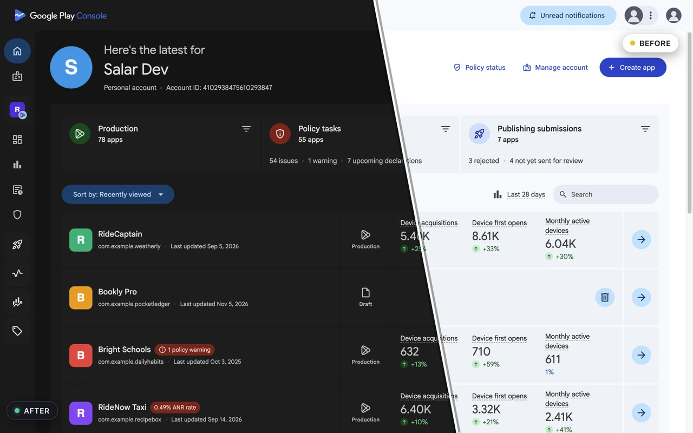
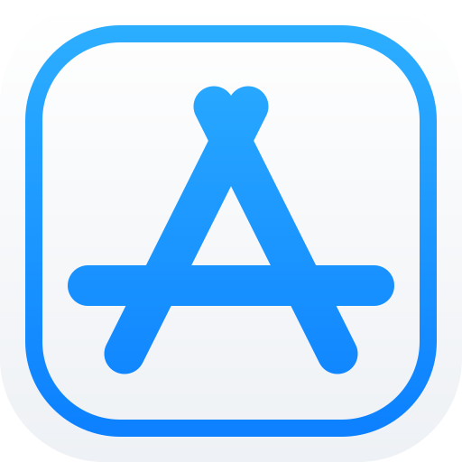
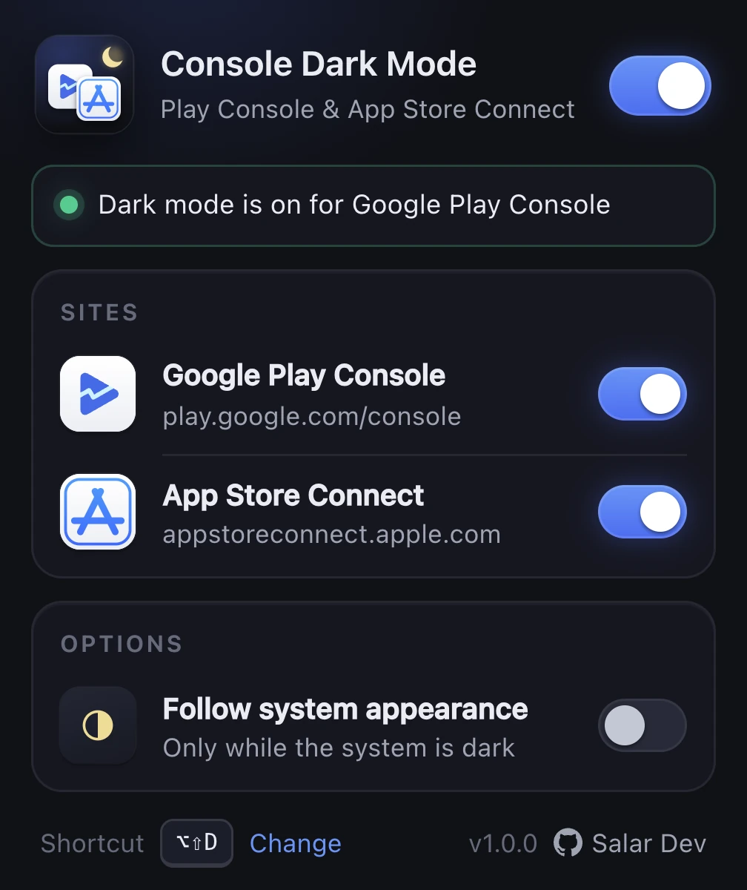

A real dark theme
Colours are remapped from the live CSS, keeping brand accents, status chips, charts and illustrations exactly where they belong.
A carefully crafted dark theme for Google Play Console and App Store Connect. Colours are remapped from the consoles' own stylesheets, so every table, chart and dialog stays readable. Nothing else on the web is touched.

play.google.com/console

appstoreconnect.apple.com
Features
Most "dark mode" extensions flip every pixel. This one reads the consoles' stylesheets and builds a matching dark palette, so it looks like the theme Google and Apple forgot to ship.
Colours are remapped from the live CSS, keeping brand accents, status chips, charts and illustrations exactly where they belong.
The theme is in place before the first paint: cold reloads, statistics, financial reports and App Analytics open dark from the first frame.
Turn Play Console or App Store Connect off independently, or everything at once, from the toolbar popup.
Alt+Shift+D toggles dark mode on the current console and restores the page instantly. Change it in Chrome's shortcut settings.
Optionally go dark only while macOS or Windows is in dark mode. Your choices sync with your Chrome profile.
Runs only on play.google.com/console and appstoreconnect.apple.com. No other site is matched, read or changed. Ever.
Screenshots
Dashboards, app lists, version pages and the popup. Click any image to enlarge.
Screenshots show fictional apps and numbers; the interface is the real thing.
The popup

Privacy
There is no analytics, no remote code, no third-party script and no network request of any kind. The extension needs two permissions: storage, to remember your three toggles, and access to the two console domains, to apply the theme.
Install
Installs in one click and updates automatically.
Add to Chromechrome://extensions and switch on Developer mode.extension folder.FAQ
No. It only runs on the two developer consoles: play.google.com/console and appstoreconnect.apple.com. The public stores, Google Search, Gmail and everything else are left exactly as they are.
The dark palette is generated from the consoles' live stylesheets rather than hard-coded, so most changes are absorbed automatically. If something looks off after an update, open an issue on GitHub with a screenshot and the page URL.
No. It is a stylesheet injected before the first paint plus a small script that keeps the theme in sync with the page. There are no network requests.
Yes. Each console has its own switch in the popup. The keyboard shortcut toggles the console you are currently on.
No. Console Dark Mode is an independent, open-source project by Salar Dev and is not affiliated with or endorsed by Google or Apple.
Free, open source, and out of your way.